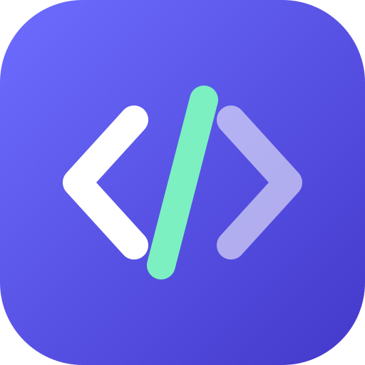

EasyAPIv1.0쿼리 파라미터는 주소 뒤 ?key=value 부분이에요. 여기서 고치면 주소도 같이 바뀝니다.
헤더는 요청에 붙는 부가 정보예요. 예: Content-Type(보내는 형식), Accept(받고 싶은 형식).
Authorization: Bearer 토큰 헤더로 자동 추가됩니다.
같은 요청을 두 서버에 동시에 보내 응답을 비교해요. 운영 ↔ 개발 서버 검증에 유용합니다.
PC에서 만든 요청과 응답을 휴대폰에 실시간으로 똑같이 보여줍니다.
주소를 입력하고 보내기를 누르세요.
예제로 바로 해보기
waiting for response…